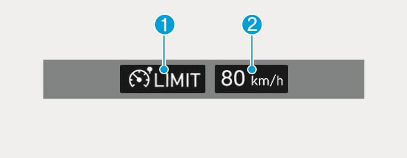
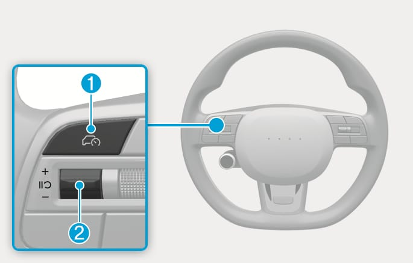

수동 속도 제한 보조 작동
제한 속도를 설정한 후, 차량의 주행 속도가 설정한 제한 속도를 초과하면 경고음이 제공됩니다.
-
차량 속도가 제한 속도 이하가 되면 경고음이 멈춥니다.
-
클러스터의 주행 보조 뷰에서 수동 속도 제한 보조 기능의 작동 상태를 확인할 수 있습니다.

2C_MSLAOverviewInfo
- 속도 제한 표시등
- 설정 속도

2C_MSLAButton
- 주행 보조 버튼
- 일시 정지/재설정 스위치
-
차량 주행 중 스티어링 휠의 주행 보조 (
¸ ) 버튼을 길게 누르십시오.-
클러스터에 제한 속도와 속도 제한 (
Ý ) 표시등이 표시됩니다. -
기능 작동 중 스티어링 휠의 주행 보조 (
¸ ) 버튼을 누르면 제한 속도와 표시등이 사라지며 기능 작동이 중단됩니다.
-
-
î /ï 스위치를 위로 올리거나 아래로 내려 원하는 속도를 설정하십시오.-
스위치를 작동할 때마다 10 km/h 간격으로 설정 속도가 변경됩니다.
-
설정된 속도를 초과하면 클러스터의 제한 속도 표시가 깜빡이며 경고음이 울립니다.
-
킥다운 기능이 작동할 때까지 가속 페달을 깊게 밟으면 설정 속도를 초과하는 속도로 주행할 수 있습니다.
-
스티어링 휠의 일시 정지/재설정 스위치(
-
제한 속도 표시가 꺼지고 속도 제한이 일시적으로 해제됩니다.
-
속도 제한 (
Ý ) 표시등은 켜진 상태로 유지됩니다.
일시 해제된 수동 속도 제한 기능을 이전 설정 속도로 재개하려면 스티어링 휠의 일시 정지/재설정 스위치(
-
î /ï 스위치를 위로 올리거나 아래로 내려 현재 속도로 기능을 다시 설정할 수도 있습니다.
차량의 안전한 제어 및 주행에 대한 모든 책임은 운전자에게 있습니다. 운전 중 위험 상황 발생 시 직접 차량을 적절하게 제어하십시오.
-
법규로 정해진 규정 속도 이내에서 제한 속도를 설정하십시오.
-
수동 속도 제한이 필요하지 않은 경우 수동 속도 제한 보조 기능을 끄고 속도 제한 (
Ý ) 표시등과 제한 속도 표시가 꺼졌는지 확인하십시오. -
의도치 않게 속도 제한 보조 기능이 작동하는 것을 방지하려면, 스티어링 휠의 주행 보조 (
¸ ) 버튼을 눌러 기능을 끄고 클러스터의 속도 제한 (Ý ) 표시등이 꺼졌는지 확인하십시오.